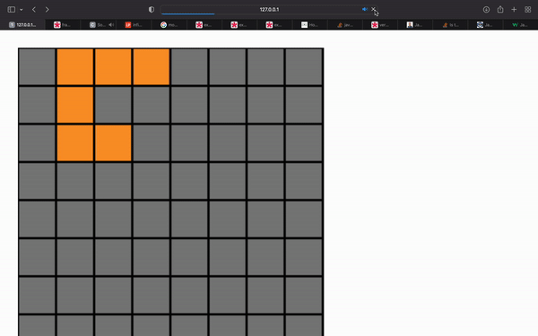

MP2 Writeup
Overview
For MP2, majority of my sketches were fairly simple as I was exploring the capabilities of p5.js. The most complex sketch I created was a simple version of tetris. At the time of me writing this writeup, core functionality of the game is still missing. I'm still continuing to work on it because I got really sucked into working on this sketch :).
Process
It's hard for me to describe my process for this assignment because majority of the time I put into my sketches involved lots of googling to understanding how to use p5.js. However, I can describe some of the steps I completed as apart of builing my tetris game.
I created the foundation of my tetris game in sketch 4, which can be seen below.
The first step thing I needed to do for this was create blocks that spawn randomly along the screens x-axis that fall by themself. After falling off the screen, my program needed to save the properties of the block so I could continue drawing them, and then I needed to spawn new blocks. After this, I created keyboard controls to allow the user to move the blocks via arrow keys.
I expanded upon this sketch in sketch7, where I created a grid to facilitate the tetris game. Currently I'm working on sketch 7 to allow blocks that reach the bottom of the screen to stack on top of eachother.
Issue Deep Dive
I think the most difficult part of my tetris game was figuring out the schema I would use to store information about blocks because each tetris "block" in my game is actually made up of several rectangle items. I also need to store the color of the block so my program could remember what to draw it as. My first instinct was to create a Block class that would store an individual rectangle in a custom linked list data structure, but trying to implementing this seemed needlesly complex. I instead decided to store this information in an array of dictionarys. All the tetris blocks were stored in an array called AllBlocks. Individual blocks would be stored as a dictionary, with a field for color and a field for an array of dictionaries. Each dictionary represents the coordinates for the individual rectangles used to make the whole block.
Ideas & Future
I'm working on making my tetris game at least somewhat functional. Right now I'm using a 2d array as a representation of the game board to easily track which grid spaces are taken up by the blocks so additional blocks are able to stack on eachother.